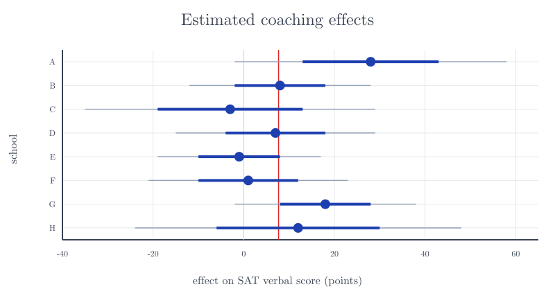
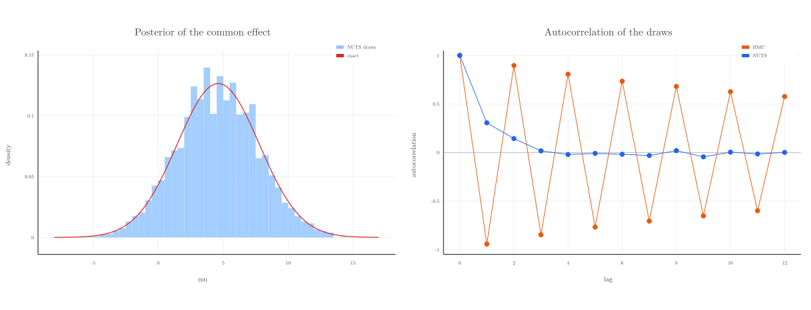
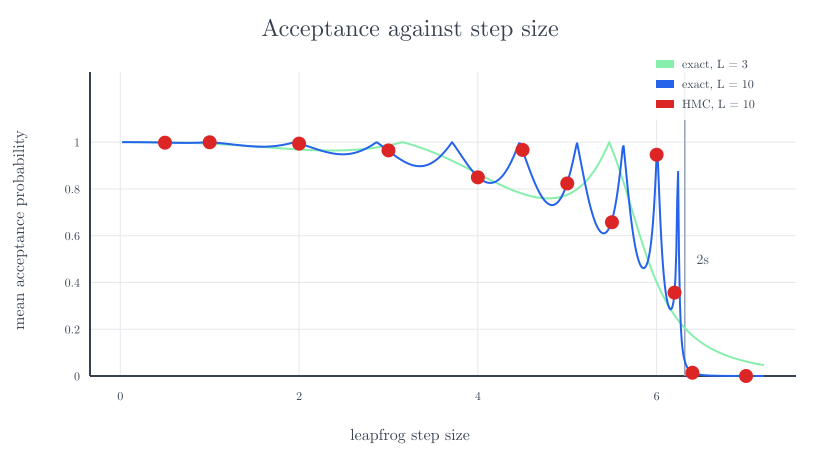
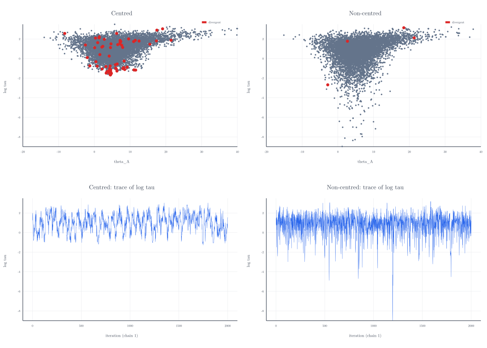
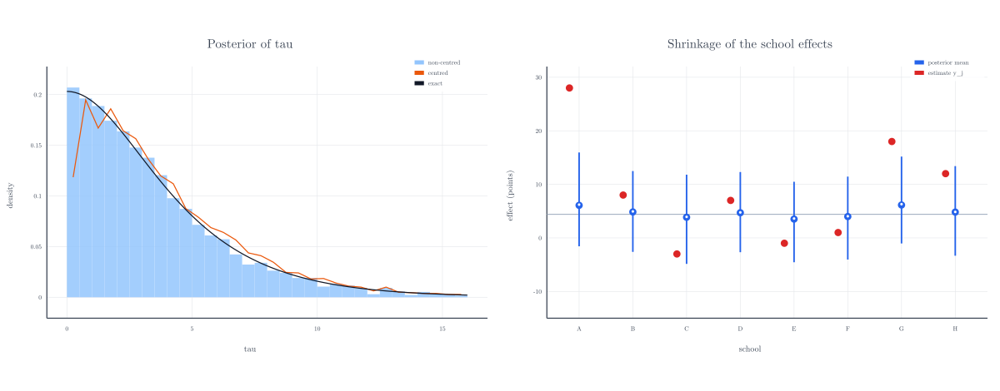

Bayesian Modelling with Hamiltonian Monte Carlo
Abstract
We fit Bayesian models to the eight-schools coaching study in
dm::datasets::eight_schools() with datamunge's bayes module, and check
every sampler against an exact answer. Under complete pooling the posterior is
Normal by conjugacy: MAP recovers its mean to three decimals, and HMC and NUTS
match its mean to within one Monte Carlo standard error. We derive Hamiltonian
Monte Carlo from the properties of Hamiltonian flow and the leapfrog integrator.
A leapfrog step is stable only when the step size is below twice the posterior
standard deviation, and on a Gaussian target the expected acceptance rate
reduces to a one-dimensional integral that agrees with simulation to within 0.01
at every step size tried. The hierarchical model has no posterior mode, because
its density grows like \(\tau^{-7}\) as the between-school spread \(\tau\to0\),
and its geometry is a funnel. The centred parameterisation gives 100 divergent
transitions, an energy diagnostic of 0.15, and an upward-biased posterior for
\(\tau\) (mean 3.87 against an exact 3.60). The non-centred parameterisation
needs about 70 times fewer gradient evaluations per effective draw of
\(\log\tau\) and agrees with the exact quadrature for all ten parameters.
The Bayesian problem
A Bayesian model combines a likelihood \(p(y\mid\theta)\) with a prior \(p(\theta)\). Bayes' theorem gives the posterior
Every answer we want is an expectation under the posterior: a mean, a standard deviation, the probability that an effect is positive, or a prediction. The evidence \(p(y)\) is an integral in as many dimensions as there are parameters and is rarely available. Markov chain Monte Carlo avoids it. A sampler needs only the unnormalised log density \(\log p(y\mid\theta)+\log p(\theta)\) and produces correlated draws \(\theta^{(1)},\dots,\theta^{(N)}\) whose averages converge to posterior expectations.
Because the draws are correlated, \(N\) draws carry less information than \(N\) independent ones. If the draws have autocorrelations \(\rho_t\), the variance of their mean is
The effective sample size \(N_{\text{eff}}\) is the number of independent draws
that would give the same precision, and the Monte Carlo standard error of a
posterior mean is \(\text{sd}/\sqrt{N_{\text{eff}}}\).
bayes::effective_sample_size estimates it from several chains with Geyer's
initial monotone sequence, and bayes::split_rhat compares the variance between
and within half-chains: \(\hat R\) near 1 means the chains agree.
This report fits two models to one small dataset. The first has an exact posterior, so we can check every sampler against it. The second, a hierarchical model, has an exact answer only through a one-dimensional integral, and shows the main way Hamiltonian Monte Carlo fails and how to fix it.
The eight schools
Rubin (1981) analysed a study by the Educational Testing Service of special
coaching for the SAT verbal test in eight high schools. Each school ran its own
randomised experiment and reported an estimated effect \(y_j\) with a standard
error \(\sigma_j\), large enough to treat as known.
dm::datasets::eight_schools() holds the eight pairs.
#include <dm/dm.hpp>
namespace by = dm::bayes;
int main() {
std::filesystem::create_directories("build");
const auto schools = dm::datasets::eight_schools();
const auto &y = schools.get_column("effect").values();
const auto &sigma = schools.get_column("std_error").values();
std::print("{}\n", schools.to_md());
const auto pooled = by::normal_mean_posterior(y, sigma, 0.0, INFINITY);
double q = 0.0;
for (std::size_t j = 0; j < y.size(); ++j)
q += std::pow((y[j] - pooled.mean) / sigma[j], 2);
const double df = static_cast<double>(y.size() - 1);
std::print("\nPrecision-weighted mean {:.2f} (standard error {:.2f}). Homogeneity statistic Q = {:.2f} on {} " "degrees of freedom, p = {:.3f}.\n",
pooled.mean, pooled.sd, q, df,
1.0 - dm::random::chi_squared_cdf(q, df));
std::vector<double> rows, lo2, hi2, lo1, hi1;
std::vector<std::string> names;
for (std::size_t j = 0; j < y.size(); ++j) {
rows.push_back(static_cast<double>(y.size() - j));
names.push_back(schools.string_at("school", j));
lo2.push_back(y[j] - 2 * sigma[j]);
hi2.push_back(y[j] + 2 * sigma[j]);
lo1.push_back(y[j] - sigma[j]);
hi1.push_back(y[j] + sigma[j]);
}
dm::graphics::RPlot::create().abline_v(0.0, dm::RGB{203, 213, 225}, 1.0).abline_v(pooled.mean, dm::RGB{220, 38, 38}, 1.5).segments(lo2, rows, hi2, rows, dm::RGB{148, 163, 184}, 1.5).segments(lo1, rows, hi1, rows, dm::RGB{30, 64, 175}, 4.0).points(y, rows, "", dm::RGB{30, 64, 175}, 7.0).y_ticks(rows, names).x_limits(-40, 65).y_limits(0.5, 8.5).title("Estimated coaching effects").x_label("effect on SAT verbal score (points)").y_label("school").size(800, 430).save_svg("build/bayes_schools.svg");
}| school | effect | std_error |
|---|---|---|
| A | 28 | 15 |
| B | 8 | 10 |
| C | -3 | 16 |
| D | 7 | 11 |
| E | -1 | 9 |
| F | 1 | 11 |
| G | 18 | 10 |
| H | 12 | 18 |
Precision-weighted mean 7.69 (standard error 4.07). Homogeneity statistic Q = 4.71 on 7 degrees of freedom, p = 0.696.

The estimates range from \(-3\) to 28 points, but the standard errors are 9 to 18 points, and the precision-weighted mean 7.69 lies inside every school's ±2 standard-error interval. The classical homogeneity statistic \(Q=\sum_j(y_j-\bar y_w)^2/\sigma_j^2=4.71\) is below its expectation of 7 under a common effect (\(p=0.70\)). The schools vary no more than their standard errors predict. That does not mean the true effects are equal: with errors this large the data cannot rule out real differences of several points either.
Two extreme models frame the analysis. No pooling takes each \(y_j\) at face value, which would credit school A with an effect of 28 points. Complete pooling assumes all schools share one effect \(\mu\). The hierarchical model of §5 sits between them and lets the data choose how much to pool.
A model with a known answer: complete pooling
The conjugate posterior
Under complete pooling \(y_j\sim N(\mu,\sigma_j^2)\) independently, and we give \(\mu\) the prior \(N(\mu_0,s_0^2)\) with \(\mu_0=0\), \(s_0=5\). The log posterior is a quadratic in \(\mu\):
A quadratic log density with coefficient \(-a/2\) on \(\mu^2\) and \(b\) on \(\mu\) is the Normal \(N(b/a,1/a)\), found by completing the square. So the posterior is Normal, its precision is the sum of the prior and data precisions, and its mean is the precision-weighted average of the prior mean and the data:
bayes::normal_mean_posterior(y, sigma, mu0, s0) returns \((m,s)\). The mode,
mean and median coincide at \(m\), so this model checks all three inference
methods.
MAP, HMC and NUTS
A model is written as a function from parameters to log density, in terms of
dm::autodiff::Var; bayes::AutodiffModel differentiates it by reverse-mode
automatic differentiation, which gives the samplers the gradients they need.
bayes::MAP maximises the log posterior with L-BFGS. bayes::HMC runs
Hamiltonian Monte Carlo with a fixed number of leapfrog steps (§4), and
bayes::NUTS chooses the number of steps itself (§4.4). Both adapt the step
size during warmup.
#include <dm/dm.hpp>
namespace by = dm::bayes;
using dm::autodiff::Var;
int main() {
std::filesystem::create_directories("build");
const auto schools = dm::datasets::eight_schools();
const auto &y = schools.get_column("effect").values();
const auto &sigma = schools.get_column("std_error").values();
const auto exact = by::normal_mean_posterior(y, sigma, 0.0, 5.0);
by::AutodiffModel pooled([&](dm::autodiff::Tape &, const std::vector<Var> & p) {
Var lp =
by::normal_lpdf(p[0], 0.0, 5.0); for (std::size_t j =
0; j < y.size(); ++j) lp =
lp + by::normal_lpdf(y[j], p[0], sigma[j]); return lp;
});
std::vector<double> mode{0.0};
by::MAP().optimize(pooled, mode);
by::HMCOptions hmc_options;
hmc_options.num_samples = 4000;
hmc_options.num_leapfrog_steps = 10;
hmc_options.initial_step_size = 1.0;
const auto hmc = by::HMC(hmc_options).sample(pooled, {0.0});
const auto h = by::summarize_draws({by::draws_of(hmc.samples, 0)});
by::NUTSOptions nuts_options;
nuts_options.initial_step_size = 1.0;
const auto nuts = by::NUTS(nuts_options).sample_chains(pooled, {0.0}, 4);
const auto n = by::summarize_draws(by::chains_of(nuts, 0));
double leapfrogs = 0.0;
for (const auto &chain : nuts)
for (const int steps : chain.n_leapfrog) leapfrogs += steps;
std::print("| method | \\(\\mu\\) | sd | draws | ESS | \\(\\hat R\\) | step size | leapfrog steps per draw |\n" "| --- | ---: | ---: | ---: | ---: | ---: | ---: | ---: |\n");
std::print("| exact | {:.3f} | {:.3f} | | | | | |\n", exact.mean, exact.sd);
std::print("| MAP (L-BFGS) | {:.3f} | | | | | | |\n", mode[0]);
std::print("| HMC, 1 chain | {:.3f} | {:.3f} | 4000 | {:.0f} | {:.4f} | {:.2f} | 10 |\n",
h.mean, h.sd, h.ess, h.rhat, hmc.final_step_size);
std::print("| NUTS, 4 chains | {:.3f} | {:.3f} | 4000 | {:.0f} | {:.4f} | {:.2f} | {:.2f} |\n",
n.mean, n.sd, n.ess, n.rhat, nuts[0].final_step_size,
leapfrogs / 4000.0);
std::print("\nMonte Carlo standard errors of the mean: HMC {:.3f}, NUTS {:.3f}. " "Errors against the exact mean: HMC {:+.3f}, NUTS {:+.3f}.\n",
h.mcse, n.mcse, h.mean - exact.mean, n.mean - exact.mean);
std::vector<double> nuts_draws;
for (const auto &chain : nuts) {
const auto d = by::draws_of(chain.samples, 0);
nuts_draws.insert(nuts_draws.end(), d.begin(), d.end());
}
const auto hist = by::posterior_histogram(nuts_draws, -8.0, 17.0, 50);
std::vector<double> grid, density;
for (double mu = -8.0; mu <= 17.0; mu += 0.05) {
grid.push_back(mu);
density.push_back(std::exp(by::normal_lpdf(mu, exact.mean, exact.sd)));
}
auto left =
dm::graphics::RPlot::create().bars(hist.centers, hist.density,
"NUTS draws", dm::RGB{147, 197, 253},
hist.width).lines(
grid, density, "exact", dm::RGB{220, 38, 38}, 2.0).title(
"Posterior of the common effect").x_label("mu").y_label("density");
const auto acf_hmc = dm::stats::acf(by::draws_of(hmc.samples, 0), 12);
const auto acf_nuts = dm::stats::acf(by::draws_of(nuts[0].samples, 0), 12);
std::print("Lag-1 autocorrelation: HMC {:.3f}, NUTS {:.3f}.\n", acf_hmc[1],
acf_nuts[1]);
std::vector<double> lags;
for (int t = 0; t <= 12; ++t) lags.push_back(t);
auto right =
dm::graphics::RPlot::create().abline_h(0.0, dm::RGB{148, 163, 184}, 1.0).lines(lags, acf_hmc, "", dm::RGB{234, 88, 12}, 1.5).points(lags, acf_hmc, "HMC", dm::RGB{234, 88, 12}, 6.0).lines(lags, acf_nuts, "", dm::RGB{37, 99, 235}, 1.5).points(lags, acf_nuts, "NUTS", dm::RGB{37, 99, 235}, 6.0).y_limits(-1.05, 1.05).title("Autocorrelation of the draws").x_label("lag").y_label("autocorrelation");
dm::graphics::RLayout::create(1, 2).add(left).add(right).size(1200, 460).save_svg("build/bayes_pooled.svg");
}| method | \(\mu\) | sd | draws | ESS | \(\hat R\) | step size | leapfrog steps per draw |
|---|---|---|---|---|---|---|---|
| exact | 4.621 | 3.157 | |||||
| MAP (L-BFGS) | 4.621 | ||||||
| HMC, 1 chain | 4.622 | 3.152 | 4000 | 14408 | 0.9998 | 4.45 | 10 |
| NUTS, 4 chains | 4.562 | 3.101 | 4000 | 2003 | 1.0008 | 4.12 | 2.09 |
Monte Carlo standard errors of the mean: HMC 0.026, NUTS 0.069. Errors against the exact mean: HMC +0.001, NUTS -0.059. Lag-1 autocorrelation: HMC -0.944, NUTS 0.305.

All three methods find the exact posterior. The L-BFGS mode is \(4.621\), the exact mean. The HMC and NUTS means differ from it by 0.001 and \(-0.059\), within their Monte Carlo standard errors of 0.026 and 0.069, and their standard deviations are within 0.06 of the exact 3.157. \(\hat R\) is within 0.001 of 1 for both.
The two samplers reach this in different ways. NUTS used about two leapfrog steps per draw, and its draws are positively correlated (lag 1: 0.31), so its 4,000 draws are worth about 2,000 independent ones. HMC's 4,000 draws are worth about 14,400, more than their number, because its lag-1 autocorrelation is \(-0.944\): each draw lands on the far side of the mean from the previous one. §4.2 explains why. On a Gaussian each leapfrog step rotates the scaled state by an angle \(\omega\) with \(\cos\omega=1-h^2/2\). The adapted step size 4.45 gives \(h=4.45/3.157=1.41\) and \(\omega\approx0.498\pi\), so ten steps rotate by about \(5\pi\), which maps \(q-m\) close to \(-(q-m)\). Such antithetic draws make the mean of a single Gaussian parameter very precise. The effect is specific to this target and step size, and does not occur in general.
Hamiltonian Monte Carlo
Dynamics that preserve the posterior
HMC treats \(q=\theta\) as the position of a particle and adds a momentum \(p\) of the same dimension, drawn as \(p\sim N(0,I)\). The joint density is \(\exp(-H(q,p))\) with the Hamiltonian
so the potential energy is the negative log posterior and \(q\) and \(p\) are independent with \(q\) distributed as the posterior. Hamilton's equations \(\dot q=\partial H/\partial p=p\), \(\dot p=-\partial H/\partial q=-\nabla U(q)\) move the particle downhill in \(U\), that is towards high posterior density, while it gains speed. Three properties make the flow useful.
- *It conserves energy:* \(\frac{d}{dt}H=\nabla U\cdot\dot q+p\cdot\dot p=\nabla U\cdot p-p\cdot\nabla U=0\).
- *It preserves volume (Liouville):* the vector field \((p,-\nabla U(q))\) has divergence \(\partial_q\cdot p-\partial_p\cdot\nabla U(q)=0\).
- *It is reversible:* following the flow, flipping \(p\) and following it again returns to the start.
A map that preserves both \(H\) and volume preserves the density \(e^{-H}\). Resampling \(p\) also preserves it, because \(p\) is independent of \(q\). So alternating the two moves leaves the posterior invariant. Since the moves follow the gradient instead of diffusing at random, they can travel far in a single step.
The leapfrog integrator and its stability limit
The flow is approximated by \(L\) leapfrog steps of size \(\varepsilon\):
Each of the three updates is a shear: it changes one variable by an amount that depends only on the other. So each update has Jacobian determinant 1, and the composition preserves volume exactly. The step is also reversible. It does not conserve \(H\) exactly, and HMC corrects the energy error \(\Delta H\) with a Metropolis test: the end point is accepted with probability \(\min(1,e^{-\Delta H})\). Volume preservation and reversibility are what make this simple acceptance probability correct.
The size of \(\Delta H\) depends on \(\varepsilon\), and a Gaussian target shows how. For \(U(q)=q^2/(2s^2)\), write \(x=(q/s,\,p)\) and \(h=\varepsilon/s\). One leapfrog step is the linear map
Here \(\det M=1\) and \(\operatorname{tr}M=2-h^2\), so the eigenvalues satisfy \(\lambda^2-(2-h^2)\lambda+1=0\). When \(|2-h^2|<2\), that is \(\varepsilon<2s\), they are a complex pair \(e^{\pm i\omega}\) with \(\cos\omega=1-h^2/2\). The trajectory then rotates on an ellipse, and the energy error stays bounded however long it runs. When \(\varepsilon>2s\) one eigenvalue is real and larger than 1 in absolute value, so the trajectory grows geometrically and the energy diverges. *The step size must be smaller than twice the smallest posterior standard deviation.* In more dimensions the same holds for every direction, with \(s\) the square root of the smallest eigenvalue of the inverse Hessian of \(U\).
The expected acceptance rate can be computed exactly. Start in equilibrium, \(x_0=r(\cos\phi,\sin\phi)\), where \(\phi\) is uniform and \(r^2/2\sim\text{Exp}(1)\). Because \(M\) is linear, \(\Delta H=r^2f(\phi)\) with \(f(\phi)=\tfrac12(|M^L(\cos\phi,\sin\phi)|^2-1)\). The average over \(r\) has a closed form: for \(f>0\),
and the acceptance probability is 1 when \(f\le0\). So the expected acceptance
is \(\frac1{2\pi}\int_0^{2\pi}\min\bigl(1,\tfrac1{1+2f(\phi)}\bigr)\,d\phi\), a
one-dimensional integral that bayes::leapfrog_gaussian_acceptance(eps, L, s)
evaluates. The pooled posterior is exactly Gaussian, so we can compare this with
HMC run at fixed step sizes and no adaptation.
#include <dm/dm.hpp>
namespace by = dm::bayes;
using dm::autodiff::Var;
int main() {
std::filesystem::create_directories("build");
const auto schools = dm::datasets::eight_schools();
const auto &y = schools.get_column("effect").values();
const auto &sigma = schools.get_column("std_error").values();
const auto exact = by::normal_mean_posterior(y, sigma, 0.0, 5.0);
by::AutodiffModel pooled([&](dm::autodiff::Tape &, const std::vector<Var> & p) {
Var lp =
by::normal_lpdf(p[0], 0.0, 5.0); for (std::size_t j =
0; j < y.size(); ++j) lp =
lp + by::normal_lpdf(y[j], p[0], sigma[j]); return lp;
});
const double s = exact.sd;
std::print("Posterior sd s = {:.3f}, so the stability limit is 2s = {:.3f}.\n\n",
s, 2 * s);
std::vector<double> eps_grid, theory10, theory3;
for (double eps = 0.02; eps <= 7.2; eps += 0.01) {
eps_grid.push_back(eps);
theory10.push_back(by::leapfrog_gaussian_acceptance(eps, 10, s));
theory3.push_back(by::leapfrog_gaussian_acceptance(eps, 3, s));
}
std::print("| step size | step / s | exact acceptance (L = 10) | HMC acceptance, 4000 draws |\n| ---: | ---: | ---: | ---: |\n");
std::vector<double> eps_runs, accept_runs;
for (const double eps : {0.5, 1.0, 2.0, 3.0, 4.0, 4.5, 5.0, 5.5, 6.0, 6.2,
6.4, 7.0}) {
by::HMCOptions options;
options.num_warmup = 0;
options.num_samples = 4000;
options.num_leapfrog_steps = 10;
options.initial_step_size = eps;
const auto run = by::HMC(options).sample(pooled, {exact.mean});
eps_runs.push_back(eps);
accept_runs.push_back(run.accept_rate);
std::print("| {:.1f} | {:.2f} | {:.4f} | {:.4f} |\n", eps, eps / s,
by::leapfrog_gaussian_acceptance(eps, 10, s), run.accept_rate);
}
dm::graphics::RPlot::create().abline_v(2 * s, dm::RGB{148, 163, 184}, 1.5).lines(eps_grid, theory3, "exact, L = 3", dm::RGB{134, 239, 172}, 2.0).lines(eps_grid, theory10, "exact, L = 10", dm::RGB{37, 99, 235}, 2.0).points(eps_runs, accept_runs, "HMC, L = 10", dm::RGB{220, 38, 38}, 7.0).text(2 * s + 0.2, 0.5, "2s", dm::RGB{71, 85, 105}, 14.0).y_limits(0.0, 1.3).y_ticks({0.0, 0.2, 0.4, 0.6, 0.8, 1.0}, {"0", "0.2", "0.4", "0.6", "0.8", "1"}).title("Acceptance against step size").x_label("leapfrog step size").y_label("mean acceptance probability").size(820, 460).save_svg("build/bayes_step_size.svg");
}Posterior sd s = 3.157, so the stability limit is 2s = 6.315.
| step size | step / s | exact acceptance (L = 10) | HMC acceptance, 4000 draws |
|---|---|---|---|
| 0.5 | 0.16 | 0.9980 | 0.9978 |
| 1.0 | 0.32 | 0.9997 | 0.9995 |
| 2.0 | 0.63 | 0.9946 | 0.9938 |
| 3.0 | 0.95 | 0.9626 | 0.9647 |
| 4.0 | 1.27 | 0.8518 | 0.8495 |
| 4.5 | 1.43 | 0.9641 | 0.9667 |
| 5.0 | 1.58 | 0.8268 | 0.8235 |
| 5.5 | 1.74 | 0.6661 | 0.6575 |
| 6.0 | 1.90 | 0.9469 | 0.9463 |
| 6.2 | 1.96 | 0.3573 | 0.3565 |
| 6.4 | 2.03 | 0.0153 | 0.0140 |
| 7.0 | 2.22 | 0.0000 | 0.0000 |

The exact acceptance rate and the simulated one agree to within 0.01 at all twelve step sizes, including the sharp features. Acceptance does not fall steadily as the step grows. After \(L\) steps the trajectory has rotated by \(L\omega\), and whenever \(L\omega\) is close to a multiple of \(\pi\), \(M^L\) is close to \(\pm I\) and the energy error almost vanishes. At \(\varepsilon=6.0\), \(\cos\omega=-0.806\) gives \(10\omega=7.97\pi\), and 94.7% of proposals are accepted. Just past the stability limit \(2s=6.315\), acceptance collapses to 0.015 at \(\varepsilon=6.4\) and to zero at 7.0. With \(L=3\) the same limit applies, but the decay past it is slower because three steps give the instability less time to grow. In more than one dimension the smallest posterior scale sets this limit, which is the key to §5.
Adapting the step size
During warmup both samplers tune \(\varepsilon\) by Nesterov dual averaging (Hoffman and Gelman 2014). After iteration \(t\) with acceptance statistic \(\alpha_t\), set
which drives the average acceptance towards the target \(\delta=0.8\). The step size used after warmup is a weighted average of \(\log\varepsilon_t\) over the warmup iterations. A target of 0.8 is a compromise: a higher target means smaller steps, more gradient evaluations per draw, and fewer divergences.
NUTS: choosing the trajectory length
HMC also needs a trajectory length \(L\varepsilon\). If it is too short the sampler diffuses like a random walk, and if it is too long the trajectory returns towards its start and the extra gradient evaluations are wasted. The No-U-Turn Sampler stops when the trajectory starts to come back. The squared distance between the two ends \(q^-,q^+\) changes at the rate
and NUTS keeps going while both \((q^+-q^-)\cdot p^+\ge0\) and
\((q^+-q^-)\cdot p^-\ge0\). To keep the move reversible it grows the trajectory
by doubling: it repeatedly picks a direction at random and adds as many leapfrog
steps as the trajectory already has, building a balanced binary tree. It stops
as soon as any subtree makes a U-turn, and then samples the next draw from the
trajectory's points in a way that leaves the posterior invariant. Hoffman and
Gelman's version, used here, chooses the point with a slice variable. A
trajectory whose energy error exceeds 1000 is stopped and recorded as
*divergent*: the integrator has met a region where \(\varepsilon\) is beyond
the local stability limit. NUTSResult records for every draw the tree depth,
the number of leapfrog steps, a divergence flag, and the energy \(H\) at the
start of the iteration.
A hierarchical model
Partial pooling
The hierarchical model gives each school its own effect \(\theta_j\) and draws those effects from a common distribution:
The between-school standard deviation \(\tau\) controls the pooling. As \(\tau\to0\) every \(\theta_j\) equals \(\mu\) (complete pooling), and as \(\tau\to\infty\) the \(\theta_j\) are unrelated (no pooling). The model has ten parameters, but the conjugate structure lets most of them be integrated out (Gelman et al. 2013, §5.4). Given \(\mu\) and \(\tau\), the posterior of \(\theta_j\) is the conjugate update of §3.1 with one observation:
The shrinkage factor \(B_j\) is the fraction of the way from \(y_j\) to \(\mu\) that the estimate moves. Noisy schools (large \(\sigma_j\)) shrink most. Integrating \(\theta_j\) out gives \(y_j\mid\mu,\tau\sim N(\mu,V_j)\) with \(V_j=\sigma_j^2+\tau^2\), which is complete pooling with inflated variances. So \(\mu\mid\tau,y\) is Normal by the same formula, and integrating \(\mu\) out by completing the square leaves
where \(m_\tau,s_\tau\) are the posterior mean and sd of \(\mu\) given \(\tau\).
The posterior \(p(\tau\mid y)\propto p(y\mid\tau)\,p(\tau)\) is now
one-dimensional. Substituting \(\tau=5\tan(\pi u/2)\) maps the half-Cauchy prior
to \(u\sim U(0,1)\), so posterior expectations are ratios of integrals over
\([0,1]\), which the midpoint rule handles well. The moments of \(\theta_j\)
then follow from the laws of total expectation and variance.
bayes::hierarchical_normal_posterior does this, giving the exact posterior
that the sampler must reproduce.
The mode does not exist
MAP fails for this model. A sampler should work on an unconstrained scale, so we sample \(\lambda=\log\tau\) and add the log-Jacobian \(\log\tau\) to the log density. Now put every \(\theta_j\) at \(\mu\) and let \(\tau\to0\). Each prior term \(N(\theta_j\mid\mu,\tau^2)\) contributes \(-\log\tau\), so the log density behaves like \(-8\log\tau+\log\tau=-7\log\tau\to+\infty\). The posterior density has no maximum: its supremum is at a point of zero probability. The posterior mass near \(\tau=0\) is still small, because the region where all eight \(\theta_j\) lie within \(\tau\) of \(\mu\) has volume about \(\tau^8\). This combination of high density and small volume is the funnel. In it the conditional scale of each \(\theta_j\) is \(\tau\), so by §4.2 a step size small enough for the neck must be below about \(2\tau\), while the mouth of the funnel needs large steps.
Centred and non-centred parameterisations
The model above, sampling \(\theta_j\) directly, is the centred
parameterisation. The non-centred one samples standardised effects
\(\eta_j\sim N(0,1)\) and sets \(\theta_j=\mu+\tau\eta_j\). The two define the
same distribution for \(\theta\). But in the non-centred form the prior of
\((\mu,\lambda,\eta)\) has no funnel, because the \(\eta_j\) are independent of
\(\tau\). The funnel then appears only through the likelihood, and here the
likelihood is weak: every \(\sigma_j\) is at least 9 points. Both are written
below as AutodiffModels over the ten unconstrained parameters
\((\mu,\log\tau,\theta\) or \(\eta)\), and each is sampled with four NUTS chains
of 1,000 warmup and 2,000 kept iterations.
#include <dm/dm.hpp>
namespace by = dm::bayes;
using dm::autodiff::Var;
int main() {
std::filesystem::create_directories("build");
const auto schools = dm::datasets::eight_schools();
const auto &y = schools.get_column("effect").values();
const auto &sigma = schools.get_column("std_error").values();
const std::size_t J = y.size();
// Parameters: mu, log tau, then theta_j (centred) or eta_j (non-centred).
by::AutodiffModel centred([&](dm::autodiff::Tape &, const std::vector<Var> & p) {
const Var mu =
p[0], log_tau =
p[1], tau =
dm::autodiff::exp(log_tau); Var lp =
by::normal_lpdf(mu, 0.0, 5.0) + by::cauchy_lpdf(tau, 0.0, 5.0) +
log_tau; for (std::size_t j = 0; j < J; ++j) lp = lp +
by::normal_lpdf(p[2 + j], mu, tau) +
by::normal_lpdf(y[j], p[2 + j], sigma[j]); return lp;
});
by::AutodiffModel non_centred([&](dm::autodiff::Tape &, const std::vector<Var> & p) {
const Var mu =
p[0], log_tau =
p[1], tau =
dm::autodiff::exp(log_tau); Var lp =
by::normal_lpdf(mu, 0.0, 5.0) + by::cauchy_lpdf(tau, 0.0, 5.0) +
log_tau; for (std::size_t j = 0; j < J; ++j) lp = lp +
by::normal_lpdf(p[2 + j], 0.0, 1.0) +
by::normal_lpdf(y[j], mu + tau * p[2 + j], sigma[j]); return lp;
});
std::print("Centred log density with every theta_j = mu = 4.4, as tau shrinks:\n\n| \\(\\tau\\) | log density |\n| ---: | ---: |\n");
for (const double tau : {10.0, 1.0, 0.1, 1e-3, 1e-6}) {
std::vector<double> at(J + 2, 4.4);
at[1] = std::log(tau);
std::print("| {:g} | {:.2f} |\n", tau, centred.evaluate(at));
}
by::NUTSOptions options;
options.num_samples = 2000;
options.initial_step_size = 0.5;
const auto c =
by::NUTS(options).sample_chains(centred,
std::vector<double>(J + 2, 0.0), 4);
const auto nc =
by::NUTS(options).sample_chains(non_centred,
std::vector<double>(J + 2, 0.0), 4);
const auto truth =
by::hierarchical_normal_posterior(y, sigma, 0.0, 5.0, 5.0);
std::print("\n| parameterisation | divergent draws | step size | leapfrog steps per draw | ESS of \\(\\log\\tau\\) " "| \\(\\hat R\\) of \\(\\log\\tau\\) | min E-BFMI | lowest \\(\\log\\tau\\) | \\(\\tau\\): mean | \\(\\tau\\): 5% |\n" "| --- | ---: | ---: | ---: | ---: | ---: | ---: | ---: | ---: | ---: |\n");
for (const auto *run : {&c, &nc}) {
std::size_t divergent = 0;
double steps = 0.0, step_size = 0.0, bfmi = INFINITY;
for (const auto &chain : *run) {
for (std::size_t i = 0; i < chain.divergent.size(); ++i) {
divergent += chain.divergent[i];
steps += chain.n_leapfrog[i];
}
step_size += chain.final_step_size / 4.0;
bfmi = std::min(bfmi, by::energy_bfmi(chain.energy));
}
auto log_tau = by::chains_of(*run, 1);
const auto lt = by::summarize_draws(log_tau);
double lowest = INFINITY;
for (const auto &chain : log_tau)
lowest = std::min(lowest, std::ranges::min(chain));
for (auto &chain : log_tau)
for (double &v : chain) v = std::exp(v);
const auto t = by::summarize_draws(log_tau);
std::print("| {} | {} of 8000 | {:.3f} | {:.1f} | {:.0f} | {:.3f} | {:.2f} | {:.2f} | {:.2f} | {:.3f} |\n",
run == &c ? "centred" : "non-centred", divergent, step_size,
steps / 8000.0, lt.ess, lt.rhat, bfmi, lowest, t.mean, t.q05);
}
std::print("| exact | | | | | | | | {:.2f} | {:.3f} |\n", truth.tau_mean,
truth.tau_q05);
// Funnel scatter: theta_1 against log tau, divergent draws in red.
const auto funnel =
[&](const std::vector<by::NUTSResult> & run, bool centred_form,
const std::string & title) {
std::vector<double> x, ly, dx, dly;
for (const auto &chain : run)
for (std::size_t i = 0; i < chain.samples.size(); ++i) {
const auto &q = chain.samples[i];
const double theta1 =
centred_form ? q[2] : q[0] + std::exp(q[1]) * q[2];
if (theta1 < -20 || theta1 > 40 || q[1] < -9 || q[1] > 3.5) continue;
(chain.divergent[i] ? dx : x).push_back(theta1);
(chain.divergent[i] ? dly : ly).push_back(q[1]);
}
auto plot =
dm::graphics::RPlot::create().points(x, ly, "",
dm::RGB{100, 116, 139}, 3.0);
if (!dx.empty())
plot.points(dx, dly, "divergent", dm::RGB{220, 38, 38}, 6.0);
return plot.x_limits(-20, 40).y_limits(-9, 3.5).title(title).x_label("theta_A").y_label("log tau");
};
const auto trace =
[&](const std::vector<by::NUTSResult> & run, const std::string & title) {
std::vector<double> it, lt;
for (std::size_t i = 0; i < run[0].samples.size(); ++i) {
it.push_back(static_cast<double>(i + 1));
lt.push_back(run[0].samples[i][1]);
}
return dm::graphics::RPlot::create().lines(it, lt, "",
dm::RGB{37, 99, 235}, 0.8).y_limits(std::min(-9.0, *std::ranges::min_element(lt)), 3.5).title(title).x_label("iteration (chain 1)").y_label("log tau");
};
dm::graphics::RLayout::create(2, 2).add(funnel(c, true, "Centred")).add(
funnel(nc, false, "Non-centred")).add(trace(c,
"Centred: trace of log tau")).add(trace(nc, "Non-centred: trace of log tau")).size(1200, 860).save_svg("build/bayes_funnel.svg");
}Centred log density with every theta_j = mu = 4.4, as tau shrinks:
| \(\tau\) | log density |
|---|---|
| 10 | -60.75 |
| 1 | -43.06 |
| 0.1 | -26.90 |
| 0.001 | 5.33 |
| 1e-06 | 53.69 |
| parameterisation | divergent draws | step size | leapfrog steps per draw | ESS of \(\log\tau\) | \(\hat R\) of \(\log\tau\) | min E-BFMI | lowest \(\log\tau\) | \(\tau\): mean | \(\tau\): 5% |
|---|---|---|---|---|---|---|---|---|---|
| centred | 100 of 8000 | 0.242 | 60.6 | 270 | 1.010 | 0.15 | -1.65 | 3.87 | 0.441 |
| non-centred | 4 of 8000 | 0.565 | 7.5 | 2397 | 1.001 | 0.94 | -8.98 | 3.56 | 0.218 |
| exact | 3.60 | 0.246 |

The first table confirms §5.2: from \(\tau=10^{-3}\) to \(10^{-6}\) the log density rises by 48.36, which is \(7\log1000\). So L-BFGS has no maximum to find, and only sampling gives a sensible answer.
The two parameterisations describe the same posterior but sample it very differently. The centred chains adapted a step of 0.242. By §4.2 that step becomes unstable once the conditional scale of the \(\theta_j\), roughly \(\tau\), falls below about 0.12 (\(\log\tau\approx-2.1\)). The chains never got that far. The lowest value reached was \(\log\tau=-1.65\), and the divergent transitions are concentrated just above it, at the bottom edge of the cloud. The draws of \(\tau\) are biased as a result. \(\tau=e^{-1.65}=0.19\) is below the exact 5% quantile of 0.246, so part of the lowest 5% of the posterior is never visited, and the posterior mean of \(\tau\) comes out at 3.87 instead of 3.60. The other diagnostics agree. The energy diagnostic E-BFMI falls to 0.15 against the usual warning level of 0.3, the effective sample size of \(\log\tau\) is 270 from 8,000 draws, and the trace wanders slowly. \(\hat R=1.010\) is the least alarming of them: four chains that all miss the same region agree with one another. Divergences are the signal to look for, because they show where the sampler failed.
The non-centred chains adapted a step more than twice as large (0.565), used 7.5 leapfrog steps per draw instead of 60.6, and went down the funnel's neck to \(\log\tau=-8.98\). Their 5% quantile of \(\tau\), 0.218, is close to the exact 0.246. They spend about 25 gradient evaluations per effective draw of \(\log\tau\), against about 1,800 for the centred form. The four remaining divergences are scattered and do not cluster in any region.
The posterior against the exact answer
The non-centred chains can now be checked parameter by parameter against the quadrature of §5.1.
#include <dm/dm.hpp>
namespace by = dm::bayes;
using dm::autodiff::Var;
int main() {
std::filesystem::create_directories("build");
const auto schools = dm::datasets::eight_schools();
const auto &y = schools.get_column("effect").values();
const auto &sigma = schools.get_column("std_error").values();
const std::size_t J = y.size();
by::AutodiffModel centred([&](dm::autodiff::Tape &, const std::vector<Var> & p) {
const Var mu =
p[0], log_tau =
p[1], tau =
dm::autodiff::exp(log_tau); Var lp =
by::normal_lpdf(mu, 0.0, 5.0) + by::cauchy_lpdf(tau, 0.0, 5.0) +
log_tau; for (std::size_t j = 0; j < J; ++j) lp = lp +
by::normal_lpdf(p[2 + j], mu, tau) +
by::normal_lpdf(y[j], p[2 + j], sigma[j]); return lp;
});
by::AutodiffModel non_centred([&](dm::autodiff::Tape &, const std::vector<Var> & p) {
const Var mu =
p[0], log_tau =
p[1], tau =
dm::autodiff::exp(log_tau); Var lp =
by::normal_lpdf(mu, 0.0, 5.0) + by::cauchy_lpdf(tau, 0.0, 5.0) +
log_tau; for (std::size_t j = 0; j < J; ++j) lp = lp +
by::normal_lpdf(p[2 + j], 0.0, 1.0) +
by::normal_lpdf(y[j], mu + tau * p[2 + j], sigma[j]); return lp;
});
by::NUTSOptions options;
options.num_samples = 2000;
options.initial_step_size = 0.5;
const auto c =
by::NUTS(options).sample_chains(centred,
std::vector<double>(J + 2, 0.0), 4);
const auto nc =
by::NUTS(options).sample_chains(non_centred,
std::vector<double>(J + 2, 0.0), 4);
const auto truth =
by::hierarchical_normal_posterior(y, sigma, 0.0, 5.0, 5.0);
// Derived draws (one vector per chain): mu, tau and theta_j = mu + tau * eta_j.
const auto derived = [&](std::size_t k) {
std::vector<std::vector<double>> out;
for (const auto &chain : nc) {
std::vector<double> d;
for (const auto &q : chain.samples)
d.push_back(k == 0 ? q[0] : k == 1 ? std::exp(q[1])
: q[0] + std::exp(q[1]) * q[k]);
out.push_back(d);
}
return out;
};
std::print("| parameter | exact mean | exact sd | NUTS mean | NUTS sd | 5% | 95% | ESS | \\(\\hat R\\) | MCSE | shrinkage \\(E[B_j]\\) |\n" "| --- | ---: | ---: | ---: | ---: | ---: | ---: | ---: | ---: | ---: | ---: |\n");
std::vector<by::PosteriorSummary> theta;
for (std::size_t k = 0; k < J + 2; ++k) {
const auto s = by::summarize_draws(derived(k));
const std::string name =
k == 0 ? "\\(\\mu\\)" : k == 1 ? "\\(\\tau\\)"
: "\\(\\theta_" + schools.string_at("school", k - 2) + "\\)";
const double em =
k == 0 ? truth.mu_mean : k == 1 ? truth.tau_mean
: truth.theta_mean[k - 2];
const double es =
k == 0 ? truth.mu_sd : k == 1 ? truth.tau_sd
: truth.theta_sd[k - 2];
const std::string b =
k >= 2 ? std::format("{:.3f}", truth.shrinkage[k - 2]) : "";
std::print("| {} | {:.2f} | {:.2f} | {:.2f} | {:.2f} | {:.2f} | {:.2f} | {:.0f} | {:.3f} | {:.3f} | {} |\n",
name, em, es, s.mean, s.sd, s.q05, s.q95, s.ess, s.rhat,
s.mcse, b);
if (k >= 2) theta.push_back(s);
}
std::print("\nExact quantiles of tau: 5% {:.3f}, median {:.3f}, 95% {:.3f}.\n",
truth.tau_q05, truth.tau_q50, truth.tau_q95);
const double log_bf =
truth.log_evidence - by::hierarchical_normal_log_marginal(y, sigma, 0.0,
5.0, 0.0);
std::print("Log Bayes factor, hierarchical model against complete pooling: {:.3f} (Bayes factor {:.2f}).\n",
log_bf, std::exp(log_bf));
// Left: exact density of tau against both samplers' histograms.
std::vector<double> tau_nc, tau_c;
for (std::size_t k = 0; k < 4; ++k)
for (std::size_t i = 0; i < nc[k].samples.size(); ++i) {
tau_nc.push_back(std::exp(nc[k].samples[i][1]));
tau_c.push_back(std::exp(c[k].samples[i][1]));
}
const auto h_nc = by::posterior_histogram(tau_nc, 0.0, 16.0, 32);
const auto h_c = by::posterior_histogram(tau_c, 0.0, 16.0, 32);
std::vector<double> grid, dens;
for (std::size_t i =
0; i < truth.tau.size() && truth.tau[i] <= 16.0; ++i) {
grid.push_back(truth.tau[i]);
dens.push_back(truth.tau_density[i]);
}
auto left =
dm::graphics::RPlot::create().bars(h_nc.centers, h_nc.density,
"non-centred",
dm::RGB{147, 197, 253},
h_nc.width).lines(
h_c.centers, h_c.density, "centred", dm::RGB{234, 88, 12}, 2.0).lines(grid, dens, "exact", dm::RGB{17, 24, 39}, 2.0).title("Posterior of tau").x_label("tau").y_label("density");
// Right: raw estimates, posterior means and 90% intervals.
std::vector<double> xs, raw, post_mean, lo, hi, exact_mean, xr;
std::vector<std::string> names;
for (std::size_t j = 0; j < J; ++j) {
xs.push_back(j + 1.0);
xr.push_back(j + 0.82);
names.push_back(schools.string_at("school", j));
raw.push_back(y[j]);
post_mean.push_back(theta[j].mean);
lo.push_back(theta[j].q05);
hi.push_back(theta[j].q95);
exact_mean.push_back(truth.theta_mean[j]);
}
auto right =
dm::graphics::RPlot::create().abline_h(truth.mu_mean,
dm::RGB{148, 163, 184}, 1.5).segments(xs, lo, xs, hi, dm::RGB{37, 99, 235}, 3.0).points(xs, post_mean, "posterior mean", dm::RGB{37, 99, 235}, 7.0).points(xr, raw, "estimate y_j", dm::RGB{220, 38, 38}, 7.0).points(xs, exact_mean, "", dm::RGB{255, 255, 255}, 2.5).x_ticks(xs, names).x_limits(0.4, 8.6).y_limits(-15, 32).title("Shrinkage of the school effects").x_label("school").y_label("effect (points)");
dm::graphics::RLayout::create(1, 2).add(left).add(right).size(1200, 470).save_svg("build/bayes_shrinkage.svg");
}| parameter | exact mean | exact sd | NUTS mean | NUTS sd | 5% | 95% | ESS | \(\hat R\) | MCSE | shrinkage \(E[B_j]\) |
|---|---|---|---|---|---|---|---|---|---|---|
| \(\mu\) | 4.40 | 3.32 | 4.30 | 3.32 | -1.30 | 9.69 | 1007 | 1.005 | 0.105 | |
| \(\tau\) | 3.60 | 3.22 | 3.56 | 3.22 | 0.22 | 9.79 | 3363 | 1.001 | 0.055 | |
| \(\theta_A\) | 6.21 | 5.59 | 6.08 | 5.39 | -1.57 | 15.95 | 2907 | 1.001 | 0.100 | 0.925 |
| \(\theta_B\) | 4.94 | 4.67 | 4.85 | 4.67 | -2.61 | 12.48 | 2448 | 1.002 | 0.094 | 0.864 |
| \(\theta_C\) | 3.93 | 5.26 | 3.85 | 5.30 | -4.85 | 11.81 | 2088 | 1.002 | 0.116 | 0.932 |
| \(\theta_D\) | 4.76 | 4.78 | 4.70 | 4.66 | -2.67 | 12.30 | 2604 | 1.001 | 0.091 | 0.881 |
| \(\theta_E\) | 3.62 | 4.66 | 3.52 | 4.64 | -4.55 | 10.48 | 2073 | 1.003 | 0.102 | 0.844 |
| \(\theta_F\) | 4.04 | 4.83 | 3.99 | 4.85 | -4.04 | 11.45 | 2295 | 1.001 | 0.101 | 0.881 |
| \(\theta_G\) | 6.30 | 5.08 | 6.14 | 5.06 | -1.04 | 15.19 | 2885 | 1.002 | 0.094 | 0.864 |
| \(\theta_H\) | 4.85 | 5.29 | 4.82 | 5.38 | -3.33 | 13.41 | 2513 | 1.001 | 0.107 | 0.944 |
Exact quantiles of tau: 5% 0.246, median 2.749, 95% 9.842. Log Bayes factor, hierarchical model against complete pooling: -0.467 (Bayes factor 0.63).

Every non-centred posterior mean is within 1.7 Monte Carlo standard errors of the exact value, with \(\hat R\le1.005\) and at least 1,000 effective draws per parameter. The errors are all slightly negative because every \(\theta_j\) depends on \(\mu\), whose estimate is 0.10 low. The histogram of \(\tau\) follows the exact density, while the centred draws have too little mass near zero and too much between 1 and 9.
The data barely constrain \(\tau\). Its posterior median is 2.75, about half the prior median of 5, but the 90% interval runs from 0.25 to 9.84. The exact log evidence gives a Bayes factor of 0.63 for the hierarchical model against complete pooling. That is mild support for pooling, consistent with the homogeneity test of §2. Because \(\tau\) is probably small next to the standard errors, the average shrinkage factor is between 0.84 and 0.94. Each school's estimate moves most of the way to the common mean: school A's 28 points becomes about 6 (90% interval \(-1.6\) to 16.0), and school C's \(-3\) becomes 3.9. The least-shrunk schools are E, B and G, which have the smallest standard errors (9 and 10 points). The hierarchical model therefore reports one modest common effect of about 4 points with wide uncertainty, and no school whose coaching stands out.
Summary
- A sampler should be checked against an exact answer where possible. The
conjugate pooled model (
bayes::normal_mean_posterior) and the quadrature of the hierarchical model (bayes::hierarchical_normal_posterior) gave exact targets, and MAP, HMC and NUTS matched them to within Monte Carlo error. - HMC preserves the posterior because Hamiltonian flow conserves energy and
volume and is reversible. Leapfrog keeps the last two exactly, and a
Metropolis test corrects the energy error. On a Gaussian a leapfrog step is a
linear map with trace \(2-h^2\), stable only for \(\varepsilon<2s\), and the
expected acceptance (
bayes::leapfrog_gaussian_acceptance) matched simulation to within 0.01. - The hierarchical eight-schools model has no posterior mode, and its centred form is a funnel whose neck needs steps below about \(2\tau\). There NUTS reported 100 divergences and an E-BFMI of 0.15, and its draws of \(\tau\) were biased upward. Non-centring \(\theta_j=\mu+\tau\eta_j\) removed the problem and cut the cost per effective draw of \(\log\tau\) by a factor of about 70.
- Per-draw divergences, tree depths and energies (
NUTSResult) and multi-chain ESS, \(\hat R\) and E-BFMI (bayes::summarize_draws,bayes::energy_bfmi) are the diagnostics that exposed the failure. \(\hat R\) alone did not. - Substantively, the eight schools are consistent with one small common coaching effect (posterior mean of \(\mu\) 4.4 points, sd 3.3), and every school's estimate is shrunk most of the way towards it.
References
- Betancourt, M. (2017). A conceptual introduction to Hamiltonian Monte Carlo. arXiv:1701.02434.
- Gelman, A., Carlin, J. B., Stern, H. S., Dunson, D. B., Vehtari, A. and Rubin, D. B. (2013). Bayesian Data Analysis, 3rd edition. Chapman and Hall/CRC. §5.5 (eight schools), §11.4–11.5 (\(\hat R\) and effective sample size).
- Hoffman, M. D. and Gelman, A. (2014). The No-U-Turn Sampler: adaptively setting path lengths in Hamiltonian Monte Carlo. Journal of Machine Learning Research 15, 1593–1623.
- Neal, R. M. (2011). MCMC using Hamiltonian dynamics. In Handbook of Markov Chain Monte Carlo, ch. 5. Chapman and Hall/CRC.
- Rubin, D. B. (1981). Estimation in parallel randomized experiments. Journal of Educational Statistics 6, 377–401.